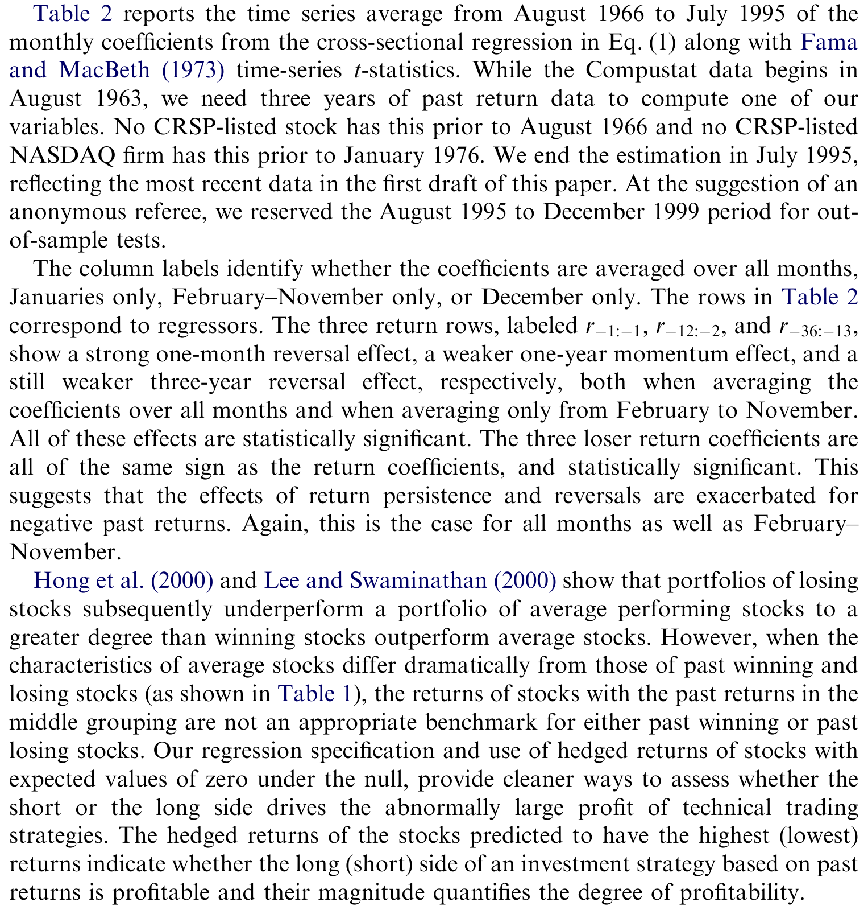
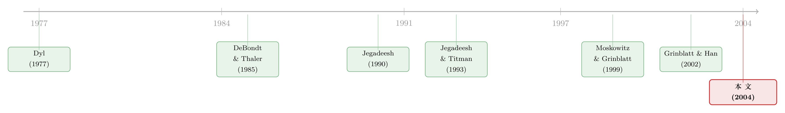

赢家要赢得「稳」：把过去收益拆成连续性、符号与季节
本文读的是 Grinblatt & Moskowitz (2004, JFE)：同样是「过去一年涨得多」的赢家，如果它是靠一个月月稳稳上涨攒出来的，未来的预期收益会显著高于靠少数几个暴涨月份堆出来的赢家；而长期反转的利润几乎全锁在一月，输家在十二月又格外难看——这两条季节性指向同一个幕后推手：年底的避税抛售（tax-loss selling）。把这些拆开来看，过去收益之所以能预测未来，远不止「动量」三个字那么简单。
1 一个被「平均」藏起来的问题
过去二十年，金融学界挖出了一个让效率市场信徒很不舒服的事实：过去的收益里，藏着未来收益的信息。短期（一个月以内）和长期（三到五年）的过去收益，与未来平均收益负相关；而中间这段（三到十二个月）却正相关。前者叫反转 (reversal)，后者叫动量 (momentum)。经典文献一字排开——Jegadeesh (1990) 的一月反转、DeBondt and Thaler (1985) 的三年反转、Jegadeesh and Titman (1993) 的一年动量——每一篇都掷地有声。
于是聪明的理论家们纷纷登场：有人说这是微观结构和数据窥探的假象，有人说这是理性的风险补偿，也有人讲出一套套行为金融的故事。符号总能被解释，可问题在于——这些策略赚的钱，多到让理论很难自圆其说。
但这篇论文真正的出发点，不是再添一个解释。Grinblatt 和 Moskowitz 问的是一个更朴素、却被长期忽略的问题：
过去收益之所以能预测未来，会不会只是因为它在替某个更根本的变量打掩护？如果是，那个变量长什么样？
换句话说，在动手编新理论之前，先把「过去收益」这个粗糙的代理变量拆开，看看里面到底装了什么。这一拆，拆出了三样东西：收益的连续性（consistency）、收益的符号（sign）、以及收益所处的季节（season）。
2 把「过去收益」拆成可以回归的积木
要拆得干净，先得有一把干净的尺子。作者用的是 Fama and MacBeth (1973) 式的横截面回归，但被试变量做了精心处理。
第一步，构造「对冲收益」(hedged return)。 他们不直接用股票的原始月度收益，而是先减掉一个基准组合的同期收益。这个基准是按规模 (size) 和账面市值比 (BE/ME) 独立排序成 25 个组合、再额外扣掉该股所属行业的规模—BE/ME 中性收益后得到的。这样，一只股票的对冲收益在零假设下期望为零——规模、价值、行业这三块已知的收益来源都被吸走了，剩下的才是过去收益的「净」边际影响。这个设计很关键：它让零成本组合在无信息时期望值真的是零，从而能干净地度量赢家与输家、连续赢家与连续输家之间的不对称。Table 1 里对冲收益的均值确实贴着零：等权 0.0012、市值加权 0.0001。
第二步，把三个互不重叠的过去收益区间塞进同一个回归。 一个月（t-1:t-1）、过去一年（t-12:t-2，跳过最近一个月以避开买卖价差反弹）、过去三年（t-36:t-13，跳过一年以保持正交）。这三段恰好对应反转—动量—反转三种已知效应。回归的完整形式是：
$$ r^*_t(j) - R^B_t(j) = a_t + b_{1t}\, r_{t-1:t-1}(j) + b_{2t}\, rL_{t-1:t-1}(j) + b_{3t}\, DCW_{t-1:t-1}(j) $$
$$ +\, g_{1t}\, r_{t-12:t-2}(j) + g_{2t}\, rL_{t-12:t-2}(j) + g_{3t}\, DCW_{t-12:t-2}(j) + g_{4t}\, DCL_{t-12:t-2}(j) $$
$$ +\, d_{1t}\, r_{t-36:t-13}(j) + d_{2t}\, rL_{t-36:t-13}(j) + d_{3t}\, DCW_{t-36:t-13}(j) + d_{4t}\, DCL_{t-36:t-13}(j) + e^*_t(j) $$
每一段过去收益，作者都同时放进四块「积木」。以最关键的一年区间为例：
rL = min(0, r) 这一项是用来抓符号不对称的：如果输家的反应和赢家不是镜像的，b2/g2/d2 就会显著。而 DCW、DCL 这两个连续性虚拟变量，才是这篇论文的灵魂。
为什么把门槛定在「11 个月里 8 个月为正」？因为在「每月正负各半」的零假设下，按二项分布，一只股票出现至少 8 个正月（或三年区间里至少 15 个正月，对应 23 个月）的概率约为 10%——正好卡在连续表现的最高十分位。门槛虽是人为选的，但两个区间的尾部 p 值大致对齐，逻辑是自洽的。
3 核心发现：赢家要赢得「稳」
铺垫了这么多积木，真正的反转出现在这里——
第一，赢家的连续性，值钱。 控制住过去一年的累计收益之后，连续赢家虚拟变量 DCW_{-12:-2} 仍然带来一块额外的、显著为正的预期收益。直白地说：两只过去一年都涨了 50% 的股票，那只「月月稳涨」的，未来跑得比「靠两三个暴涨月撑起来」的更好。 高累计收益本身只是一个嘈杂的代理，真正起作用的，是那种细水长流的稳定性。这不是凭空冒出来的——Grinblatt and Han (2002) 早就用处置效应 (disposition effect) 预言了「连续赢家为正、连续输家为负」这一对效应（关于处置效应在真实交易里的样子，可参见《死扛亏损的人，为什么没亏钱？》）；Watkins (2002) 则用一个贝叶斯学习模型给出另一条路径：持续的正（负）收益是低（高）贴现率的信号，贴现率的改变本身就制造出可被察觉的价格反应，看起来就是动量。连续性也可能只是波动率倒数的统计估计——但无论机制是哪一个，它都说明「过去收益」这个变量被用得太粗了。

Table 2: reports the time series average from August 1966 to July 1995 of the
第二，长期反转，几乎只活在一月。 作者发现，三年反转策略的利润绝大部分集中在一月。这一刀切下去，意义重大：既然一年动量并不挑这个季节，那么「长期反转」和「中期动量」之间那种「同源对称」的优雅联系，就显得相当勉强——它们大概率不是同一台机器的两个齿轮。
第三，输家在十二月格外难看。 对过去表现差的公司，十二月的收益强烈为负。一月的反弹、十二月的下挫——这套季节节律，正是避税抛售的指纹（关于一月前后到底是谁在换仓，可参见《一月效应背后，是谁在悄悄换仓？》）。
4 把「税」请上证人席
到这里，故事还差临门一脚：凭什么说幕后推手是避税抛售，而不是机构的「橱窗粉饰」(window dressing) 或别的什么？
作者的论证方式很漂亮——用税法本身做自然实验。逻辑是这样的：当预期的有效资本利得税率要下降时（投资者有动机提前兑现亏损），输家身上的抛压加大，于是动量策略更赚、反转策略相对更不赚；当税法转而鼓励把亏损递延时，恰好反过来——反转策略更赚、动量利润萎缩。
关键在于：季节性差异所刻画出的横截面图景，和税法变动所刻画出的横截面图景，方向完全吻合。作者进一步发现，由过去一年和三年形态构造的市值加权策略，在低税年份、且剔除一月与十二月之后，盈利显著下降。
这一点是致命的：无论是行为解释还是理性风险解释，都不会预言这些效应在低税年份变弱、或随当年所处季节而强弱不同。Constantinides (1984) 早就证明，当长短期资本利得被同等对待、且无交易成本时，年底本不该出现避税抛售的高峰；可现实里投资者偏偏在年底盯着税单做决策。Grinblatt and Keloharju (2001, 2003) 在芬兰投资者身上、Hvidkjaer (2001) 从报价价差反推出的买卖压力上，都印证了同一套年末抛、年初买的节律（这种「从成交单反推动量」的思路，可参见《动量到底是谁干的？》）。
这一步是全文的分水岭：它把「过去收益能预测未来」从一个无差别的统计规律，变成了一个有制度成因、随税制与季节而呼吸的现象。任何想单独解释这个规律的理论，都必须先回答：你凭什么也能解释这种随税收的涨落？
5 哪种股票最「听话」
最后，作者还问了一个对实操者很要命的问题：哪类股票上，这些技术策略最赚钱？
答案是：小盘、高换手、低机构持股的股票，过去收益效应和季节效应都最显著。这一发现本身又是一条间接证据——这类股票正是散户主导、最容易出现避税抛售而非机构橱窗粉饰的角落。Table 1 的描述统计里能看到这种「极端者偏小、偏高换手」的影子：在过去一年的市值加权分组中，赢家（第 10 组）的市值百分位高达 89.41、换手百分位只有 36.14，而输家（第 1 组）市值百分位 70.41、换手百分位却到 62.97——输家明显更小、更活跃。
而把所有这些拆解重新拼回去、做成一个简约的选股打分系统后，最好与最差评分的股票之间，即便在控制了规模、价值、行业等收益来源、剔除了微观结构效应、并做了数据窥探（data snooping）校正之后，经济意义上的收益依然惊人地大。这正是 Sullivan, Timmermann and White (1999) 式批评者最难绕过的地方：钱是真的，而且躲过了一道道「这是不是假象」的盘问。
6 文献脉络
把这条线索拉直来看，会发现它是两股河流的交汇。
一股是过去收益预测未来这条主线：Dyl (1977) 最早从资本利得税出发解释年底的股价行为；DeBondt and Thaler (1985) 给出三年长期反转；Jegadeesh (1990) 发现一月反转；Jegadeesh and Titman (1993) 确立一年动量。到 Moskowitz and Grinblatt (1999)，动量被进一步追问「是不是行业在动」。
另一股是避税抛售与一月效应这条暗线：从 Roll (1983)、Reinganum (1983) 到 Poterba and Weisbenner (2001)，一群人反复指向年底税收。
本文的位置，是把这两条河接到了一起：用 Grinblatt and Han (2002) 的连续性洞见做骨架，用税制变动做识别，证明所谓的「动量」与「反转」，很大一部分其实是同一套避税行为在不同季节、不同税制下的两副面孔。（这条「动量到底是风险还是行为、还会不会随商业周期变脸」的争论，另一面可参见《会「看天」的 beta》。）

7 评论与延伸（Q&A + 研究方向）
(a) 几个可能的疑问
Q：「连续性」和「波动率」到底是不是一回事？
不完全是，但确实纠缠。一只月月稳涨的股票，其月收益波动通常较小，所以连续性可以是「波动率倒数」的统计估计。作者承认这一点，但他们的回归是在控制了累计收益水平之后再看连续性虚拟变量的边际效应，因此它捕捉的不是「涨了多少」，而是「涨得稳不稳」这一独立维度——这正是 Grinblatt and Han (2002) 处置效应预言的东西，未必能被单纯的波动率解释吸收。
Q：长期反转「只在一月」，会不会只是样本期巧合？
这是最该警惕的地方。一月本就是小盘股收益的高发期，把一个本来分散全年的效应「错觉性」地压到一月，并非不可能。作者的防线是：动量并不挑一月，而反转挑——两者的季节性差异本身就是信息；再叠加税制变动那条独立证据，巧合的可能性被压低了。但严格说，识别仍部分依赖「季节—税制方向一致」这条相关性论证，而非真正的外生冲击。
Q：凭什么排除「橱窗粉饰」，咬定是避税抛售？
两条间接证据：其一，效应在低机构持股、小盘、高换手的股票上最强——这些恰恰是散户而非机构主导的角落，橱窗粉饰是机构行为，对不上；其二，效应随税制方向系统性变化，而橱窗粉饰没有理由随资本利得税率涨落。两条都不是铁证，但方向一致地指向税收。
Q：这和「动量是风险补偿」的说法冲突吗？
直接冲突。Conrad and Kaul (1998)、Chordia and Shivakumar (2002) 等理性解释，都难以预言「效应在低税年份变弱、并随季节强弱不同」。一个真正的风险溢价，不该看税历表脸色。这正是本文对理性阵营最有杀伤力的一击。
Q：跳过最近一个月、跳过最近一年，是不是在「数据加工」里偷东西？
不是偷，是防漏。跳过最近一个月，是为了让一年动量回归与一个月反转回归正交，并避开买卖价差反弹（bid–ask bounce）这类微观结构偏差——Jegadeesh and Titman (1995) 等都指出短期反转里混着流动性噪声。跳过最近一年同理，是为了让三年区间与一年区间不重叠。这些都是为了把三种效应干净地分离，而非制造效应。
Q：这套打分策略今天还能赚钱吗？
论文样本止于 1999 年。此后避税抛售的制度环境（税率、税收递延账户占比、ETF 的洗售规避）都变了，散户结构也变了。把这套策略原样搬到今天大概率会衰减——但这恰恰是它的优点：因为它指认了一个有制度成因的机制，所以我们能预测「在什么条件下它会变弱」，而不是只观察到一个会神秘消失的异象。
(b) 几个可能的研究问题与提案
1. 把「连续性溢价」搬到公司债市场。 【经济故事】债券收益同样存在动量，而信用债的持有人结构（保险、共同基金）与避税动机和股票截然不同。如果「连续性」捕捉的是处置效应或贴现率信号，那么在以机构为主、避税抛售较弱的信用市场里，连续性溢价应当显著弱于股票——这能反过来检验机制。 【可行性】中。数据上 TRACE + Mergent FISD 可构造月度债券收益与「连续正月」计数；难点在债券月度收益噪声大、非交易月多，需要用成交加权或更长区间。识别靠横向对比股票—债券的连续性溢价差。
2. 用退休账户占比的外生变化识别避税抛售。 【经济故事】本文用税率变动识别，但税率变动常与宏观周期纠缠。一个更干净的来源是免税账户（IRA/401k）持股比例的横截面/时序变化：免税账户里的股票没有避税抛售动机，其年末季节性应当消失。 【可行性】中高。可用 13F + 共同基金持仓拆出应税与免税持有人份额，做 DiD：年末输家收益的季节性，应随该股「应税持有人份额」上升而增强。数据可得，识别相对干净。
3. 外资持有人会不会「抹平」避税季节性？ 【经济故事】外国投资者面对的是本国而非美国的税历表，他们的年末抛售时点与美国本土投资者错位。因此高外资持股的美股，其十二月输家下挫、一月反弹的幅度应当被稀释。 【可行性】中。需要 Subrahmanyam 类的机构/外资持股数据（本文已用到机构持股），把外资份额作为调节变量。挑战在于干净分离「外资」与「机构」两个维度。这与本博客关注的外资持有人主题天然契合。
4. 把连续性维度引入流动性—异象的方向性检验。 【经济故事】既然连续输家在年末承受额外抛压，这类股票的流动性供给在十二月可能系统性变薄。那么「异象组合的流动性暴露」也应有季节性——这能把本文与异象的流动性中性问题接起来（参见《流动性的方向感》）。 【可行性】中。需高频或日内成交数据估月度流动性，按连续输家/赢家分组看十二月—一月的价差与深度变化。数据密集但 doable。
评述者的判断
这篇论文的真正贡献，不在于发现了又一个能赚钱的策略，而在于它换了一种提问方式：不是「过去收益为什么能预测未来」，而是「过去收益在替谁打掩护」。把粗糙的累计收益拆成连续性、符号、季节三个维度后，原本各说各话的动量与反转，被收编进同一条有制度成因的叙事里——避税抛售。用税法变动做识别，是全文最聪明的一招，因为它给出了一个别的理论都不预言的可证伪含义：效应该随税制与季节呼吸。
但我对识别仍有两点保留。其一，核心证据是「季节方向」与「税制方向」的相关性吻合，而非一个真正外生的税收冲击；税率变动常与商业周期同向，混淆难以完全排除。其二，「长期反转只在一月」这一断言，对样本期与小盘股权重相当敏感，换个区间未必稳健。我最想看到的后续，是用免税账户持股或外资持有人这类与避税动机正交的横截面变异，把「是避税在驱动」这件事从相关性推到更接近因果的位置——而这，恰好落在公司债、外资持有人与流动性这几条我一直在追的暗线上。
参考文献
- Constantinides, G. (1984). Optimal stock trading with personal taxes. Journal of Financial Economics 13, 65–89.
- DeBondt, W.F.M., Thaler, R. (1985). Does the stock market overreact? Journal of Finance 40, 793–808.
- Dyl, E. (1977). Capital gains taxation and year-end stock market behavior. Journal of Finance 32, 165–175.
- Fama, E.F., MacBeth, J. (1973). Risk, return, and equilibrium: empirical tests. Journal of Political Economy 71, 607–636.
- Grinblatt, M., Han, B. (2002). The disposition effect and momentum. Working paper, UCLA Anderson School.
- Grinblatt, M., Keloharju, M. (2001). What makes investors trade? Journal of Finance 56, 589–616.
- Grinblatt, M., Moskowitz, T.J. (2004). Predicting stock price movements from past returns: the role of consistency and tax-loss selling. Journal of Financial Economics 71, 541–579.
- Hvidkjaer, S. (2001). A trade-based analysis of momentum. Working paper, University of Maryland.
- Jegadeesh, N. (1990). Evidence of predictable behavior of security returns. Journal of Finance 45, 881–898.
- Jegadeesh, N., Titman, S. (1993). Returns to buying winners and selling losers: implications for stock market efficiency. Journal of Finance 48, 65–91.
- Moskowitz, T.J., Grinblatt, M. (1999). Do industries explain momentum? Journal of Finance 54, 1249–1290.
- Poterba, J.M., Weisbenner, S.J. (2001). Capital gains tax rules, tax loss trading, and turn-of-the-year returns. Journal of Finance 56, 353–368.
- Sullivan, R., Timmermann, A., White, H. (1999). Data snooping, technical trading rule performance, and the bootstrap. Journal of Finance 54, 1647–1692.
- Watkins, B. (2002). Does consistency predict returns? Working paper, Syracuse University.